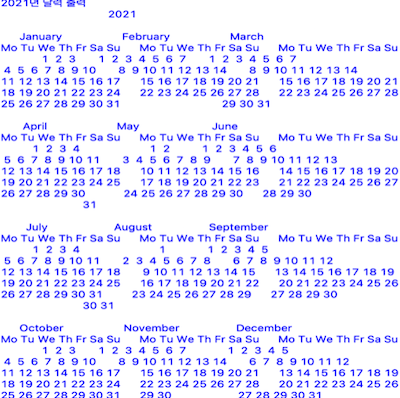
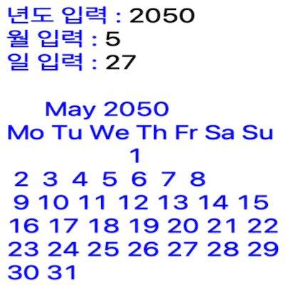

実装機能

|
5秒後の時間を計算する機能 現在の日時と5秒後の日時を計算して出力します。 |
|  |
2021年のカレンダーを見せる機能 2021年度の全体的なカレンダーを出力します。 |
|  |
日付に関するカレンダーを見せる機能 入力した日付が属するカレンダーを出力します。 |

|
曜日を計算する機能 入力 受信日の曜日を計算して出力します。 |
背景と目的
コンピューティング思考の授業時に日付と時刻を計算するプログラムを実装する課題がありました。
コンピューティング思考の授業時に日付と時刻を計算するプログラムを実装する課題がありました。
学んだこと
- Pythonからカレンダーで日付を計算する方法を学びました。
- Pythonからtimeで時間を計算する方法を学びました。
- Pythonでシミュレータを実装する方法を学びました。
進行手順
- カレンダーモジュールを使用して2021年度のカレンダー全体を出力しました。
- 年、月、日を入力したら、カレンダーモジュールを使用してその日付のカレンダーと曜日を出力しました。
- タイムモジュールを使用して、現在時刻を取得して出力し、5秒待ってから再出力しました。
- このようにして目的のプログラムを実装できました。
能力強化のために最も努力したこと
calendar モジュールと time モジュールの活用
calendar モジュールと time モジュールの活用
全体構造

使用技術
Python
Python
開発環境
Python IDLE 3.7
Python IDLE 3.7
追加の説明